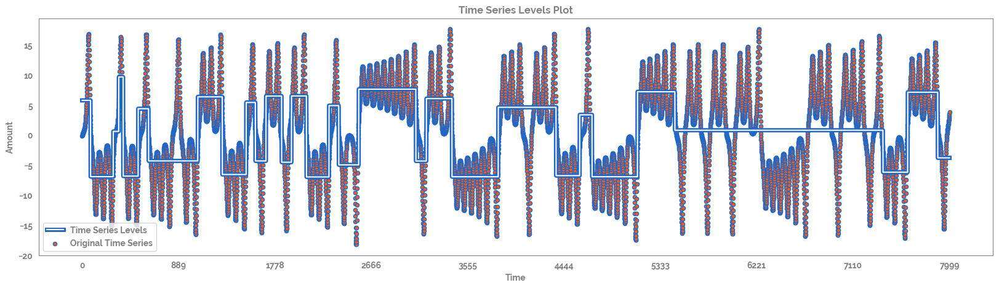
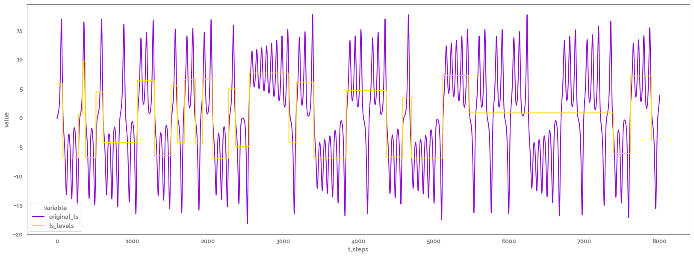
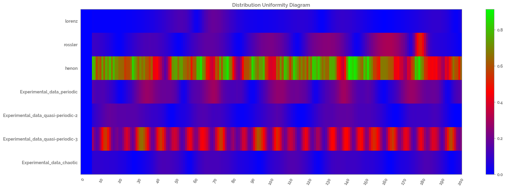
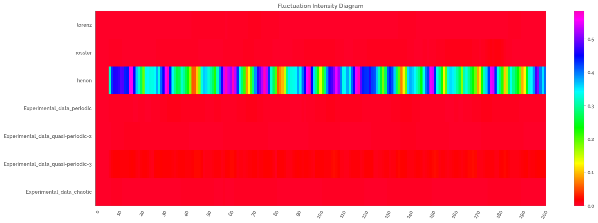
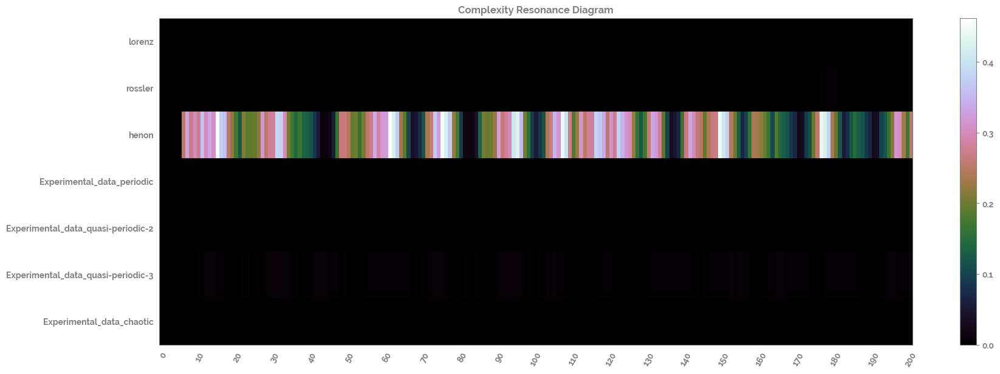
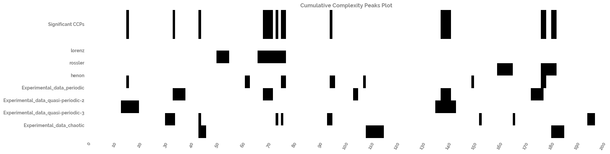

Using NLTSA functions from the jmspack package¶
Showing the usage of the following NLTSA functions¶
fluctuation_intensity(): run fluctuation intensity on a time series to detect non linear change
distribution_uniformity(): run distribution uniformity on a time series to detect non linear change
complexity_resonance(): the product of fluctuation_intensity and distribution_uniformity
complexity_resonance_diagram(): plots a heatmap of the complexity_resonance
ts_levels(): defines distinct levels in a time series based on decision tree regressor
cumulative_complexity_peaks(): a function which will calculate the significant peaks in the dynamic complexity of a set of time series (these peaks are known as cumulative complexity peaks; CCPs)
[1]:
import os
tmp = os.getcwd()
os.chdir(tmp.split("jmspack")[0] + "jmspack")
[2]:
import numpy as np
import pandas as pd
import matplotlib.pyplot as plt
import seaborn as sns
from sklearn.preprocessing import MinMaxScaler
from jmspack.NLTSA import (ts_levels,
distribution_uniformity,
fluctuation_intensity,
complexity_resonance,
complexity_resonance_diagram,
cumulative_complexity_peaks,
cumulative_complexity_peaks_plot)
import jmspack
[3]:
os.chdir(tmp)
[4]:
if "jms_style_sheet" in plt.style.available:
_ = plt.style.use("jms_style_sheet")
[5]:
print(f"The current version of 'jmspack' used in this notebook is: {jmspack.__version__}")
The current version of 'jmspack' used in this notebook is: 0.0.3
Read in the time series dataset¶
[7]:
ts_df = pd.read_csv("https://raw.githubusercontent.com/jameshtwose/jmspack/main/datasets/time_series_dataset.csv", index_col=0)
ts_df.head()
[7]:
| lorenz | rossler | henon | Experimental_data_periodic | Experimental_data_quasi-periodic-2 | Experimental_data_quasi-periodic-3 | Experimental_data_chaotic | |
|---|---|---|---|---|---|---|---|
| 0 | -0.156058 | 0.170777 | -1.443430 | 3.00425 | 2.78453 | 3.62505 | 3.38143 |
| 1 | -0.071057 | -0.428226 | -0.173122 | 2.97957 | 2.79728 | 3.71557 | 3.40631 |
| 2 | 0.004560 | -1.014346 | 0.937000 | 2.95782 | 2.81526 | 3.81517 | 3.44081 |
| 3 | 0.072342 | -1.592594 | 0.470093 | 2.94161 | 2.83334 | 3.88885 | 3.47883 |
| 4 | 0.133683 | -2.161230 | 1.460110 | 2.92549 | 2.85939 | 3.95306 | 3.50761 |
[8]:
ts = ts_df["lorenz"]
Calculate and plot the time series levels¶
[9]:
ts_levels_df, fig, ax = ts_levels(ts,
ts_x=None,
criterion="mse",
max_depth=10,
min_samples_leaf=1,
min_samples_split=2,
max_leaf_nodes=30,
plot=True,
equal_spaced=True,
n_x_ticks=10)
/Users/james/miniconda3/envs/jmspack_dev/lib/python3.9/site-packages/sklearn/tree/_classes.py:359: FutureWarning: Criterion 'mse' was deprecated in v1.0 and will be removed in version 1.2. Use `criterion='squared_error'` which is equivalent.
warnings.warn(

[10]:
ts_levels_melt = ts_levels_df.melt(id_vars="t_steps")
ts_levels_melt.head(2)
[10]:
| t_steps | variable | value | |
|---|---|---|---|
| 0 | 0 | original_ts | -0.156058 |
| 1 | 1 | original_ts | -0.071057 |
[11]:
_ = plt.figure(figsize=(20,7))
_ = sns.lineplot(x="t_steps",
y="value",
hue="variable",
data=ts_levels_melt)

Scale and calculate and plot the distribution uniformity of the time series dataset¶
[17]:
scaler = MinMaxScaler()
scaled_ts_df = pd.DataFrame(scaler.fit_transform(ts_df),
columns=ts_df.columns.tolist()).loc[0:200, :]
distribution_uniformity_df = pd.DataFrame(distribution_uniformity(scaled_ts_df,
win=7,
xmin=0,
xmax=1,
col_first=1,
col_last=7)
)
distribution_uniformity_df.columns=scaled_ts_df.columns.tolist()
_ = complexity_resonance_diagram(distribution_uniformity_df,
plot_title='Distribution Uniformity Diagram',
cmap_n=10)

Calculate and plot the fluctuation intensity of the time series dataset¶
[18]:
fluctuation_intensity_df = pd.DataFrame(fluctuation_intensity(scaled_ts_df,
win=7,
xmin=0,
xmax=1,
col_first=1,
col_last=7)
)
fluctuation_intensity_df.columns=scaled_ts_df.columns.tolist()
_ = complexity_resonance_diagram(fluctuation_intensity_df,
plot_title='Fluctuation Intensity Diagram',
cmap_n=11)

Calculate and plot the complexity resonance of the time series dataset¶
[19]:
complexity_resonance_df = complexity_resonance(distribution_uniformity_df, fluctuation_intensity_df)
_ = complexity_resonance_diagram(complexity_resonance_df, cmap_n=9)

Calculate and plot the cumulative complexity peaks of the time series dataset¶
[20]:
cumulative_complexity_peaks_df, significant_peaks_df = cumulative_complexity_peaks(df=complexity_resonance_df)
[21]:
_ = cumulative_complexity_peaks_plot(cumulative_complexity_peaks_df=cumulative_complexity_peaks_df,
significant_peaks_df=significant_peaks_df)
